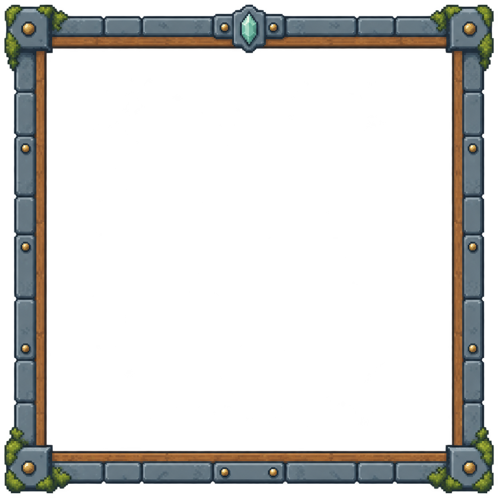
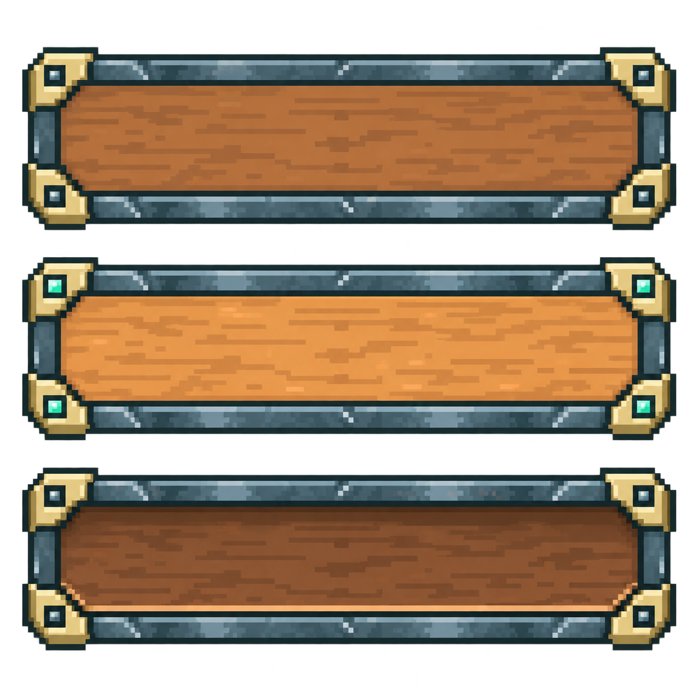
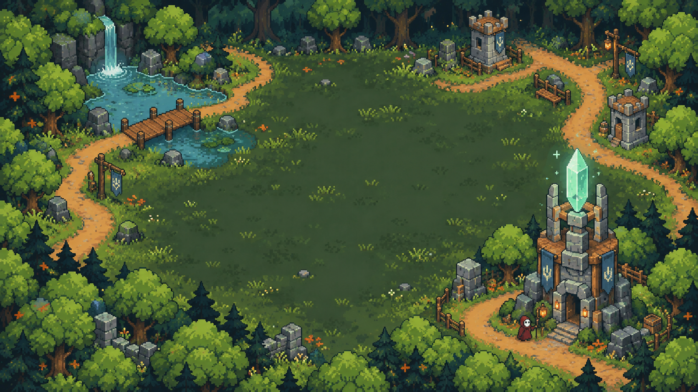
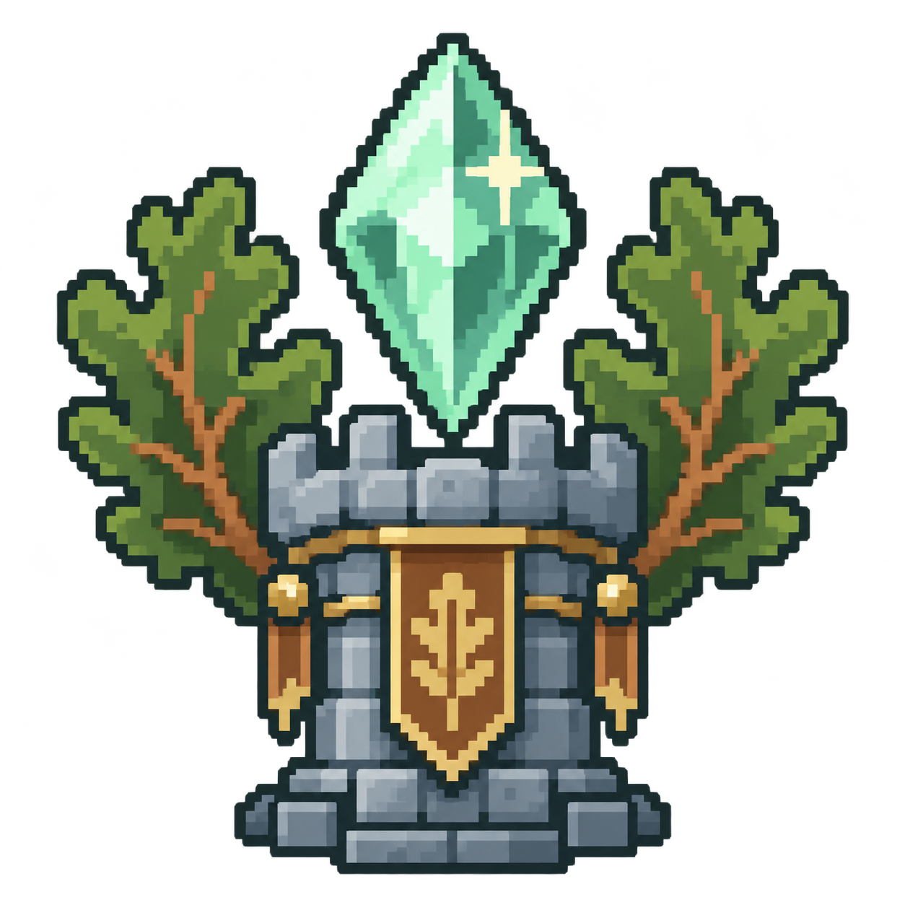
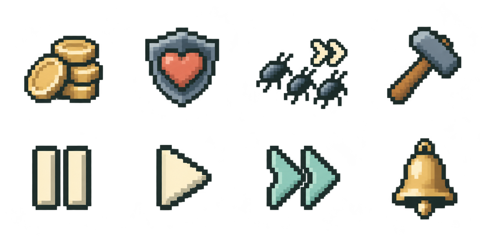
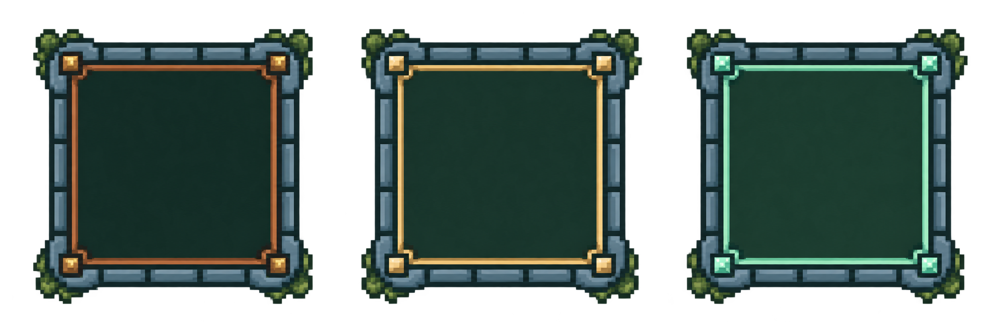
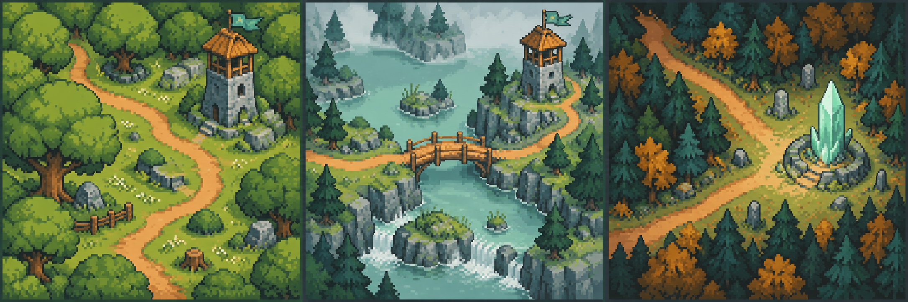

01 · Fensterrahmen
Für Menü, Wellenanzeige, Turminfos, Einführung und Ergebnis. Der transparente Rahmen lässt sich mit neun Segmenten skalieren.
PNG herunterladen · 1254 × 1254Stein, Eichenholz, Moos und Mintkristall — ein gemeinsamer Stil für Spiel und Menü.

Für Menü, Wellenanzeige, Turminfos, Einführung und Ergebnis. Der transparente Rahmen lässt sich mit neun Segmenten skalieren.
PNG herunterladen · 1254 × 1254
Normal, Hover und gedrückt, in drei Zeilen. Die Mitte bleibt frei für lesbare Beschriftungen.
PNG herunterladen · 1254 × 1254
Eine ruhige Lichtung verbindet das Hauptmenü mit der Spielwelt; Text und Auswahl liegen auf abgedunkelten Flächen darüber.
PNG herunterladen · 1672 × 941
Die gemeinsame Marke für Kopfzeile, Hauptmenü, Ladeanzeige und Ergebnis.
PNG herunterladen · 1254 × 1254
Acht Symbole in einem Atlas mit vier Spalten und zwei Zeilen. Ersetzt die stilistisch unterschiedlichen Unicode-Zeichen.
PNG herunterladen · 1774 × 887
Normal, Hover und ausgewählt in drei Spalten. Die Turmgrafiken, Namen und Preise bleiben eigene Elemente.
PNG herunterladen · 2172 × 724
Drei Kapitelbilder für die Auswahl. Sie zeigen die Atmosphäre jeder Karte und dienen nicht als exakte Spielplan-Vorschau.
PNG herunterladen · 2172 × 724Erstellt mit dem integrierten Imagegen-Werkzeug. Die vollständigen Prompts stehen in README.md; Größen und Atlas-Aufteilung in manifest.json. Alle Dateien sind auch im Offline-Spiel enthalten.